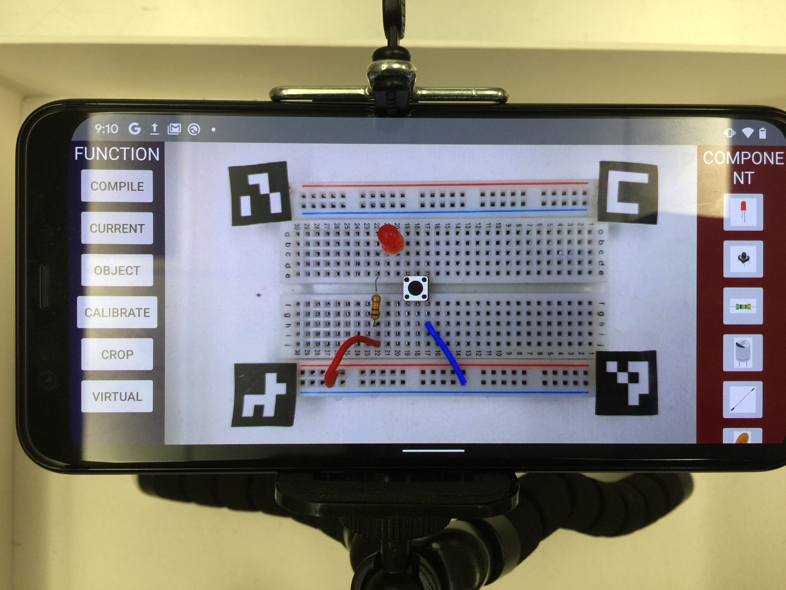

Publication

Exploring the Design Space of User-System Communication for Smart-home Routine Assistants
CHI' 2020 (Proceedings of the ACM Conference on Human Factors in Computing Systems)
Ruei-Che Chang* , Yi-Shyuan Chiang*, Yi-Lin Chuang, Shih-Ya Chou, Hao-Ping Lee, I-Ju Lin, Jian Hua Jiang Chen, Yung-Ju Chang
[Paper] [Video] [Talk]Contribution: Design experiment workflow using WoZ and User Enactment, and execute the experiment as experimenter. Analyze qualitative data with co-authors using Affinity Diagram and write some parts of paper.

Glissade: Generating Balance Shifting Feedback to Facilitate Auxiliary Digital Pen Input
CHI' 2020 (Proceedings of the ACM Conference on Human Factors in Computing Systems)
Kai-Chieh Huang, Chen-Kuo Sun, Da-Yuan Huang, Yu-Chun Chen, Ruei-Che Chang , Shuo-wen Hsu, Chih-Yun Yang, Bing-Yu Chen
[Paper] [Video] [Talk]Contribution: Programming 6 applications (including games and daily usage of tablet) by Unity3D. Discussion about the modification after being rejected first time.

Masque: Exploring Lateral Skin Stretch Feedback on the Face with Head-Mounted Displays
UIST' 2019 (Proceedings of the ACM Symposium on User Interface Software & Technology)
Chi Wang, Da-Yuan Huang, Shuo-wen Hsu, Chu-En Hou, Yeu-Luen Chiu, Ruei-Che Chang, Jo-Yu Lo, Bing-Yu Chen
[Paper] [Video] [Talk]Contribution: Using Unity3D to create authoring interface (tablet version) for designer to create desired haptic feedback on Masque.
Manuscript in Preparation

A Computer Vision Based Toolkit to Assist Novices in Learning Circuit/Breadboard Prototyping
*authorship is pending, this paper is expected to be submitted to UIST'2020
Ruei-Che Chang* , Te-Yen Wu*, Zheer Xu*, Xing-Dong Yang*
Contribution: Project discussion and ideation. Building the entire system, including python server with computer vision algorithms for different tasks and android client to function and show the circuit visualization and tooltips overlayed on the screen.

TanGo: Exploring Expressive Tangible Interactions on Head-Mounted Displays
First rejected by CHI'20 (average score 2.875) and will be submitted to other venue
Ruei-Che Chang* , Chi-Huan Chiang*, Chih-Yun Yang, Shuo-wen Hsu, Da-Yuan Huang
[Video]Contribution: Project discussion and ideation. All parts of programming of TanGo, including arduino and two applications. Writing whole paper.
Side Projects

TextBox: Exploring Text-entry on Head-Mounted Displays
Final Project in Topics in HCI (CS189) at Dartmouth College 2019
[PDF]
Using Three-Step-Search to Realize Tracking System on the Pan-Tilt Platform
Undergraduate Thesis - National Cheng Kung University
Ruei-Che Chang* , Chi-Huan Chiang*, Chih-Yun Yang, Shuo-wen Hsu, Da-Yuan Huang
[PDF]